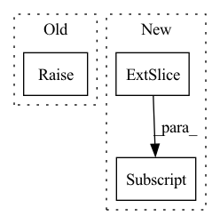

Pattern ID :3079
Before Change
def forward(self, x, **kwargs):
// input: T frames: [b, T, c, h, w]
// output: single frame: [b, c, h, w]
raise NotImplementedError
def pred_n(self, x, pred_length=1, **kwargs):
// input: T frames: [b, T, c, h, w]After Change
pred = pred.unsqueeze(dim=1)
preds.append(pred)
loss_dicts.append(loss_dict)
x = torch.cat([x[:, 1:] , pred], dim=1)
pred = torch.cat(preds, dim=1)
if loss_dicts[0] is not None:In pattern: SUPERPATTERN
Frequency: 5
Non-data size: 3
Instances Fragment ID: 16578444
Project Name: ais-bonn/vp-suite
Commit Name: b1ebac921dc35dcaf5e5c3f9fe803c4c9e2d78f8
Time: 2022-01-14
Author: boltres@ais.uni-bonn.de
File Name: vp_suite/models/_base_model.py
M Class Name: VideoPredictionModel
N Class Name: VideoPredictionModel
M Method Name: forward(3)
N Method Name: forward(2)
M Parent Class: nn.Module
N Parent Class: nn.Module
M File Name: vp_suite/models/_base_model.py
N File Name: vp_suite/models/_base_model.py
M Start Line: 45
M End Line: 45
N Start Line: 51
N End Line: 69
Before Change
elif self.combining_operation == "sum":
e = iid_embeddings.sum(dim=1)
else:
raise ValueError("combining_operation must be in ["sum", "mean"].")
embedding = self.fc_subnet(e)
After Change
trial_counts = torch.zeros(batch, 1)
for i in range(batch):
// remove NaNs
valid_x = x[i, ~torch.isnan(x[i, :, 0] ), :]
trial_counts[i] = valid_x.shape[0]
trial_embeddings = self.trial_net(valid_x)
// apply combining operation over permutation dimension Fragment ID: 16578445
Project Name: mackelab/sbi
Commit Name: 1352e77bdbc47aa4a4130679903b57672e48218c
Time: 2023-03-01
Author: jan.boelts@tum.de
File Name: sbi/neural_nets/embedding_nets.py
M Class Name: PermutationInvariantEmbedding
N Class Name: PermutationInvariantEmbedding
M Method Name: forward(2)
N Method Name: forward(2)
M Parent Class: nn.Module
N Parent Class: nn.Module
M File Name: sbi/neural_nets/embedding_nets.py
N File Name: sbi/neural_nets/embedding_nets.py
M Start Line: 271
M End Line: 284
N Start Line: 277
N End Line: 304
Before Change
coarse_token_ids,
fine_token_ids
):
raise NotImplemented
// audio LM
After Change
tokens = self.transformer(tokens)
pred_coarse_tokens, pred_fine_tokens = tokens[:, :n] , tokens[:, n:]
coarse_logits = self.coarse_logits(pred_coarse_tokens)
fine_logits = self.fine_logits(pred_fine_tokens) Fragment ID: 16578440
Project Name: lucidrains/audiolm-pytorch
Commit Name: 9c6785b8998ef733d751bf99a47b8daa39795fda
Time: 2022-11-03
Author: lucidrains@gmail.com
File Name: audiolm_pytorch/audiolm_pytorch.py
M Class Name: FineTransformer
N Class Name: FineTransformer
M Method Name: forward(3)
N Method Name: forward(3)
M Parent Class: nn.Module
N Parent Class: nn.Module
M File Name: audiolm_pytorch/audiolm_pytorch.py
N File Name: audiolm_pytorch/audiolm_pytorch.py
M Start Line: 580
M End Line: 580
N Start Line: 599
N End Line: 617
Before Change
self,
semantic_token_ids
):
raise NotImplemented
class CoarseTransformer(nn.Module):
def __init__(After Change
return_loss = False
):
if return_loss:
labels, ids = ids.clone(), ids[:, :-1]
tokens = self.semantic_embedding(ids)
start_tokens = repeat(self.start_token, "d -> b 1 d", b = ids.shape[0]) Fragment ID: 16578437
Project Name: lucidrains/audiolm-pytorch
Commit Name: fac3152e10621496e88b6236aa638d21fa9806af
Time: 2022-11-04
Author: lucidrains@gmail.com
File Name: audiolm_pytorch/audiolm_pytorch.py
M Class Name: SemanticTransformer
N Class Name: SemanticTransformer
M Method Name: forward(3)
N Method Name: forward(2)
M Parent Class: nn.Module
N Parent Class: nn.Module
M File Name: audiolm_pytorch/audiolm_pytorch.py
N File Name: audiolm_pytorch/audiolm_pytorch.py
M Start Line: 558
M End Line: 558
N Start Line: 562
N End Line: 584
Before Change
len is equal to the batch size, the second len is equal to the top_k and the third len is equal to the respective
number of classes for the child FC.
raise NotImplementedError()
class FlowDictDecorator(nn.Module):After Change
number of classes for the child FC.
n = len(features)
parent_indices = parent_flow_dict.activated.argsort(dim=1)[:, :self.top_k]
res = []
for i in range(n):
res_for_parent = []
for parent_index in parent_indices[i]: Fragment ID: 16578439
Project Name: hristo-vrigazov/dnn.cool
Commit Name: 3782b44e17cff0a1bc35747df9fe88b4bfac72c3
Time: 2020-06-28
Author: hvrigazov@gmail.com
File Name: dnn_cool/modules.py
M Class Name: NestedFC
N Class Name: NestedFC
M Method Name: forward(3)
N Method Name: forward(3)
M Parent Class: nn.Module
N Parent Class: nn.Module
M File Name: dnn_cool/modules.py
N File Name: dnn_cool/modules.py
M Start Line: 70
M End Line: 70
N Start Line: 71
N End Line: 79